Se tiene diferentes rubros, como son:
caseritas doña salo
este emprendimiento es familiar, nacio en la pandemia como un recurso extra para la familia trabajan solo familiares, ofreciendo rosquetes chuquisaqueños, empanadas de yotala, bizcochuelos de betanzos, rosquetes tarijeños.
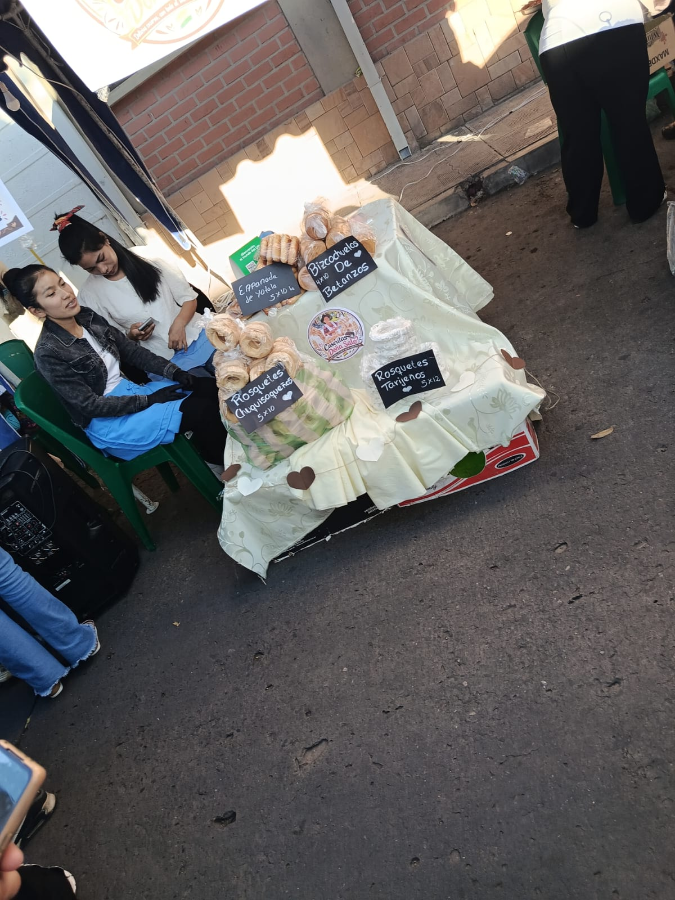
quesillismo
una dulce adiccion: este emprendimiento es familiar donde preparaan y sirven unos riquisimos flanes
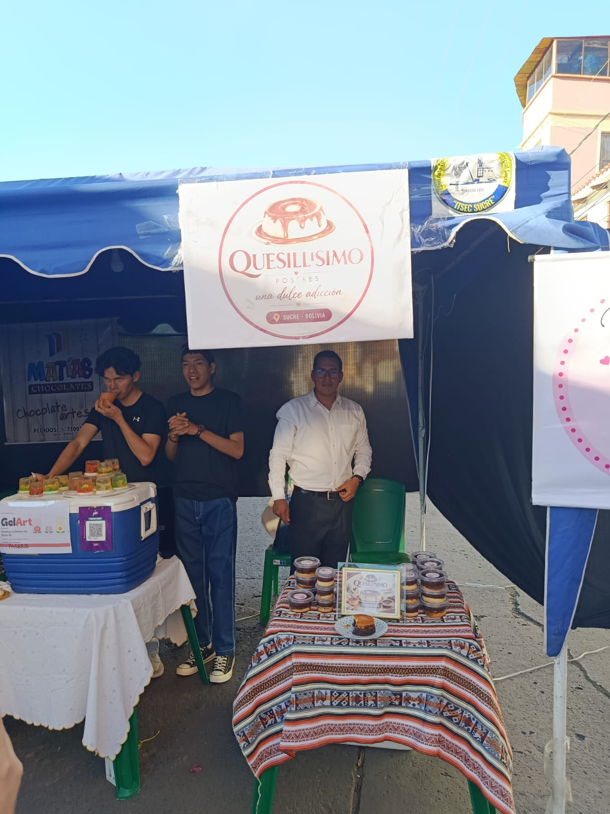
mondongo
emprendimiento es de la señora sonia que vende sus alimentos en el intituto, un delicioso mondonguito trabajan con su hija.
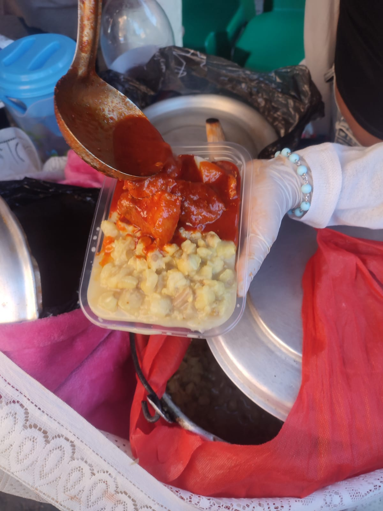
k'alapari
es un emprendimiento de una docente del instituto itsec sucre este plato es nuevo aqui en sucre e innovador, este emprendimiento nacio por que quieren mostrar su gastronomia de la ciudad de potosi ya que este platoes tipico del depto de potosi.
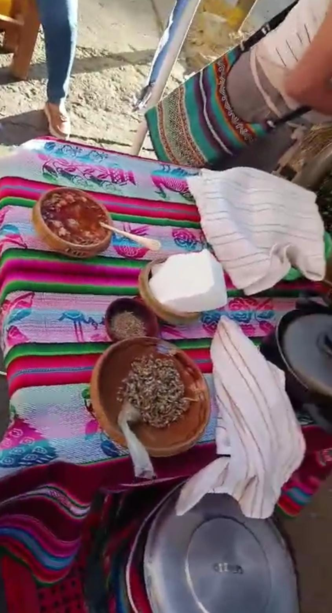
lanitas trululu
rincon de las artesanias: en este emprendiento realizan rosas de lanas tejidas con crochet este emprendimiento nacio por el gusto a tejer que se tiene, en su emprendimiento trabaja con su familia.
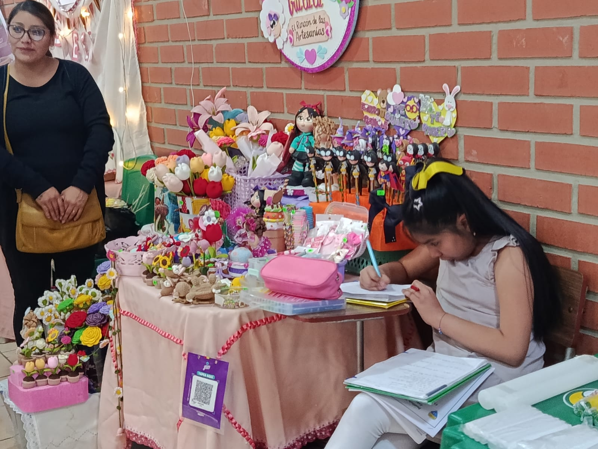
Misk'i Awaysito
emprendimiento nacio por unos problemas de salud que atravesaba en ese entonces, ya que nesecitaba distraer o mantener ocupada su mente con algo
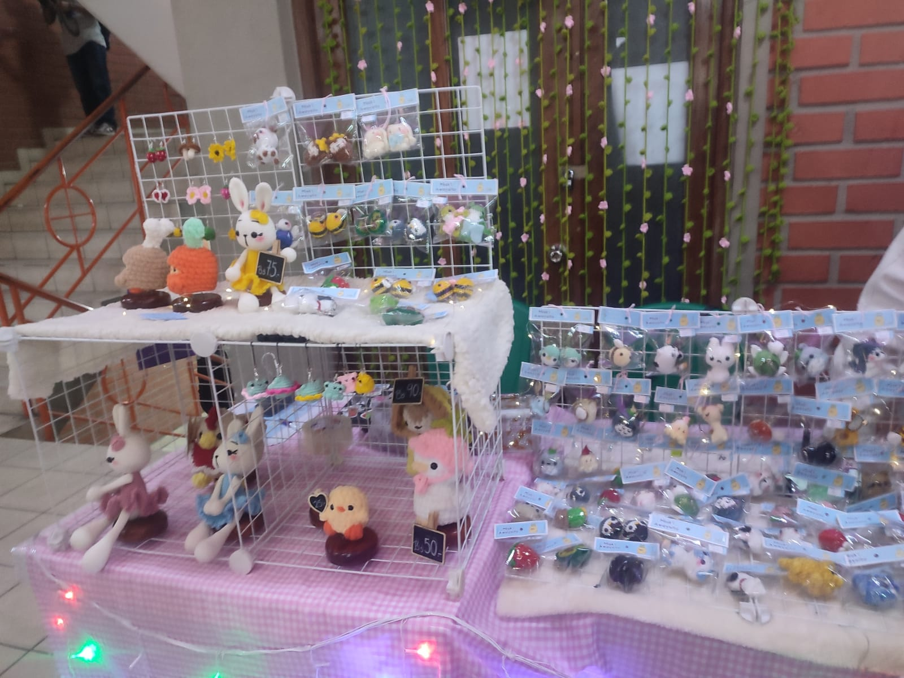
mates medicinales
este emprendimiento empezo porque estudio esa area y quiere inovar a para que demas persona cuiden su salud de manera natural.
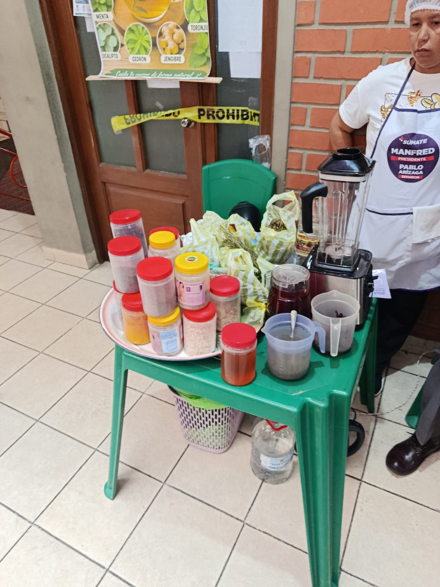
uñas
diseños creados con amor para su clientela, este emprendiminto empezo cuando termino de estudiar belleza integral en vista que no podia econtrar trabajo decidio montar su emprendimiento.
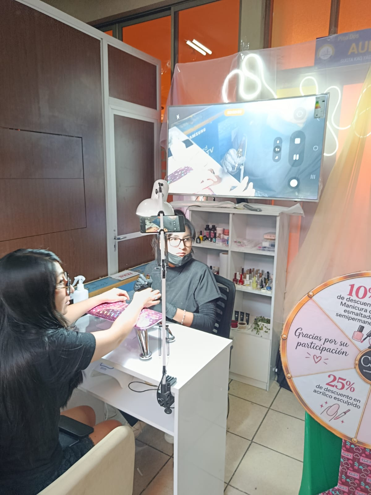
aretes
diseños unicos y personales este emprendimiento nacio por falta de economia o trabajo, donde decidio emprender para sacr adelante a su familia.
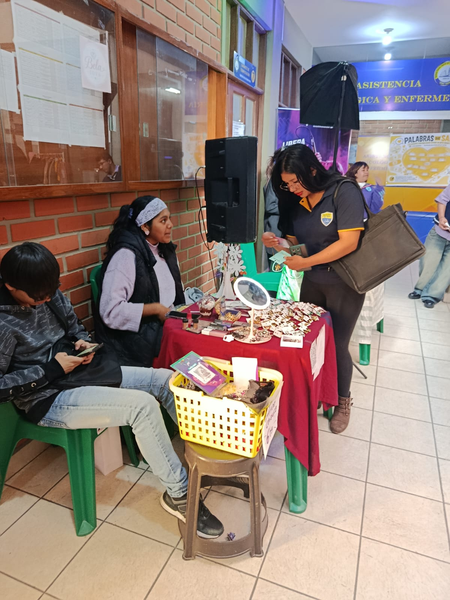
dead leaf: es un emprendimiento de jovenes estudiantes, debido a la pandemia y la falta de economia les impulso a emprender.
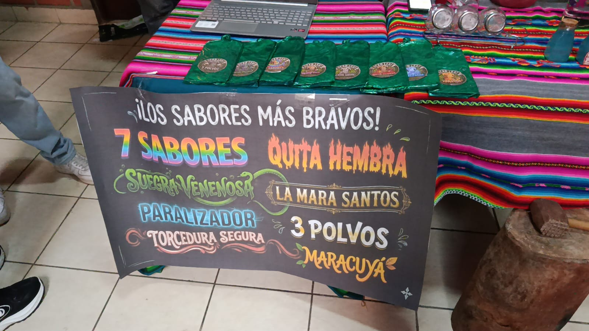
complaciendo con las mejores musicas nacionales e internacionales.
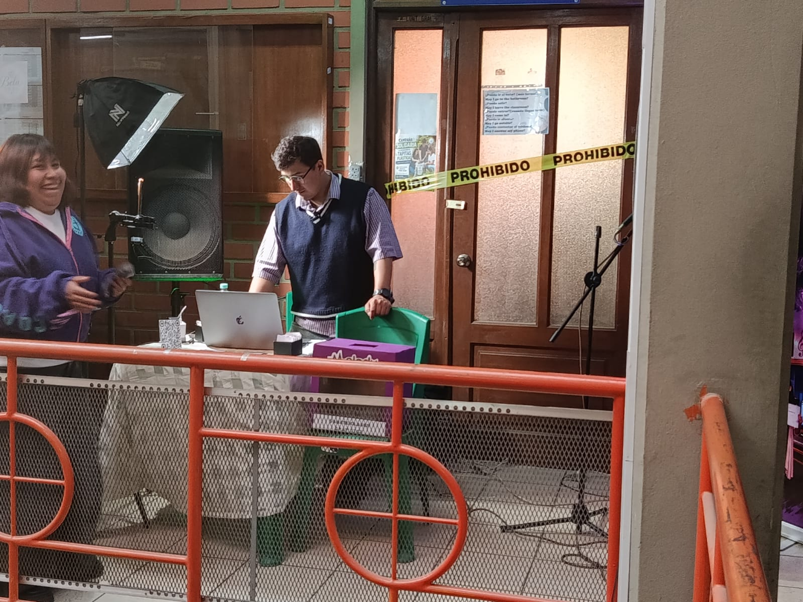
el emprendimiento empezó, pensando en los jovenes para que puedan acceder a ropa barata y bonita.
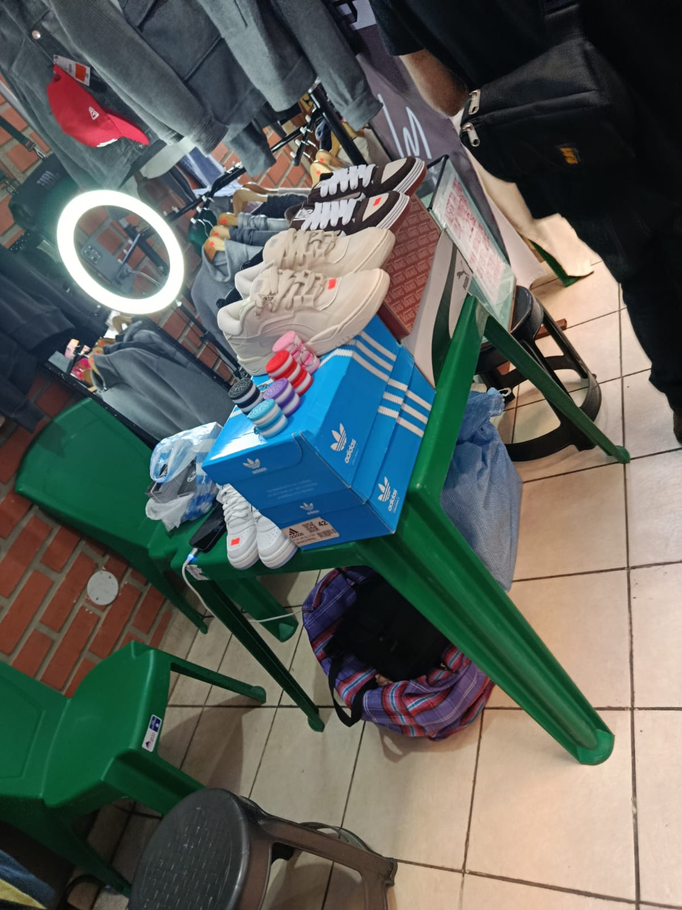
entretenimiento
una noche muy divertida, llena de asombrosos espectaculos que nos brindan diversion y claro las risas no pueden faltar.
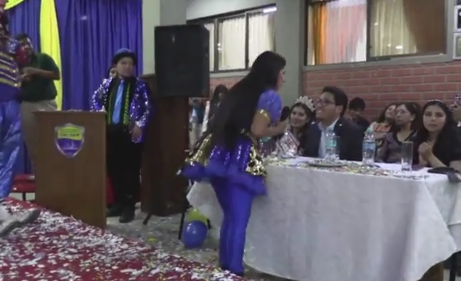
musica
no podian faltar unos grupos musicales para amenizar la noche, maravillosas interpretaciones.
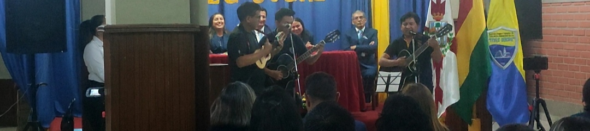